Can a tiny compiler-compiler grow into something useful?
by Bill McKeeman, Mathworks and Dartmouth, March 2009
Contents
- Abstract
- 1 Introduction
- 1.1 Executable Grammars
- 1.2 IOG: the Input/Output Grammar
- 1.3 GEM: the Grammar Executing Machine
- 1.4 Running GEM
- 1.5 GEM Implementation
- 1.6 How GEM works
- 2 GEM Capabilities
- 2.1 Predefined Character-class CFGs and IOGs.
- 2.2 Whitespace and IOG nowhite
- 2.2.1 Define function scan and redefine GEM
- 2.3 IOG pretty, the antidote to nowhite
- 2.4 pretty applied to nowhite
- 2.5 IOG inversion
- 2.5.1 Inversion Example
- 3 Extending The IOGs
- 3.1 Multiple character input and output symbols.
- 3.1.1 Redefine scan, pretty and GEM
- 3.2 Arithmetic expressions
- 3.2.1 Postfix
- 3.2.2 Prefix
- 3.2.3 Intel X86 code
- 3.3 Using Regular Expressions in IOGs
- 3.4 Transforming regular expressions back to IOGs
- 3.4.1 The expression IOG as an example using Kleene *
- 3.4.2 Add Kleene +
- 4 Making GEM efficient
- 4.1 Examples of using gem2
- 4.2 Intel X86 Assembler
- 4.4 A calculator
- 4.5 When things go wrong
- 5 Summary
- 6 Reference
- 7 Signature
- A.1 gem2.m
- A.2 iog2.c
Abstract
Context-free grammars are extended to accomodate output. A grammar executing machine is introduced which accepts an input text and a grammar and outputs another text. Both the input text and the output text can also be grammars, permitting the production of ever more powerful grammars. In this manner, one can start from a small beginning and bootstrap towards a conventional compiler.
The grammars and the machine have some simple symmetries that lead to actions such as backtracking and decompiling. It is also possible to directly execute bit strings in the Intel x86 hardware, opening the possibility of indefinite extension.
This development stops well short of even a simple conventional compiler but that is not because of any known limitations to the approach.
1 Introduction
The question is: starting from a minimal extensible compiler-compiler, how far can one go? The question is only partly answered here.
Note: I have used this material only for teaching. I do not know of any practical or theoretical consequences. The material has some resonance with Guy Steele's 1998 OOPSLA talk Growing a Language.
Note: This presentation was prepared by the MATLAB publish feature which accepts a commented MATLAB script as input. This paragraph came from a MATLAB comment. The grey-bar sections are MATLAB code.
format compact % help MATLAB save screen space
Immediately following the each code section is the corresponding output (if any). There was no output from the format statement above.
1.1 Executable Grammars
It is well-known that the rewriting rules of a Context-free Grammar can be mechanically applied, and that if some sequence of applications results in a parse, that parse is correct. The trick is, of course, in finding the correct sequence of applications.
The Grammar Executing Machine (GEM) presented here can do that, with reasonable efficiency, executing its input grammar one character at a time.
1.2 IOG: the Input/Output Grammar
An Input/Output Grammar (IOG), a kind of syntax directed translation schema, is a Mealy-like extension of the Context-Free Grammar (CFG). The name is chosen to emphasize the symmetry of input (what any CFG naturally defines) and output (which has been added). Following the usual conventions for CFGs, an IOG
- 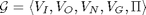
consists of a set of input symbols, a set of output symbols, a set of phrase names, a set of goals, and a set of reduction rules. The output symbols are analogous to the {actions} of YACC. In this paper 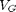 contains only one symbol but for other uses, in particular the description of finite automata, multiple goals are useful.
An IOG satisfies the following constraints:
- 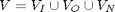
- 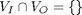
- 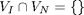
- 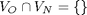
- 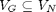
- 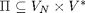
When is empty, an IOG is a conventional CFG with terminal symbols 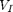.
There are some initial restrictions on the IOGs GEM can accept.
- Whitespace is not allowed between symbols.
- The input, output and phrase name symbols are all single-character.
- The IOG must not be left-recursive.
Part of the task is to use IOGs to relax these restrictions on IOGs.
1.3 GEM: the Grammar Executing Machine
GEM is a Grammar Executing Machine. It can be thought of as a function
o = GEM(i, g)
where i is the input text, o is the resulting output text, and g is the text of the IOG being executed. The final argument g can be thought of as the stored program in a Von Neumann computer.
The implementation of GEM and some of its grammars is bundled in a MATLAB object. It can be made available for use in this talk by the following lines of MATLAB code.
G = gem(); % instantiate the object GEM = G.run; % GEM is a function
1.4 Running GEM
A grammar g acceptable to GEM is a sequence of rules, each of the form
p = ;
where p is a letter and is a sequence of symbols from 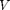. Letters are used to signify members of 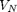. By convention, the first rule in g defines the goal symbol, and therefore is the only member of .
The word sequence used twice above is significant: grammar rules are tried in order, allowing specific cases to be separated out from more general cases. Useful GEM grammars may be technically ambiguous. Three examples suffice to show all the capabilities of GEM.
IOG g0, the simplest possible input grammar
r=;
is applied to the null string. Since this grammar does no output, it gives a null string result. More significantly GEM did not give a diagnostic, which implies it actually parsed the null string.
fprintf('res=%s', GEM('', 'r=;'));
res=
IOG g1
r='x'"y";
shows the use of ' and " to delimit members of and respectively. This grammar accepts character x as input and produces character y as output. Note: in a MATLAB string '' stands for '.
fprintf('res=%s',GEM('x', 'r=''x''"y";'));
res=y
IOG g2
'r=s;s='1';s='2';
shows the use of additional rules to describe alternatives. Given the string 1 as input, it produces the null string as output.
fprintf('res=%s', GEM('1', 'r=s;s=''1'';s=''2'';'));
res=
1.5 GEM Implementation
The (GEM) machine itself is implemented in C file iog.c. Function iog is called from MATLAB.
Why not use MATLAB instead of C for iog.c? Fair question. The answer is that GEM is best expressed at a very low level, even lower than C. MATLAB is in the wrong direction. Perhaps assembler would be more even more appropriate.
Here is the line-count of the C code (MEX file) for GEM.
!wc -l iog.c
232 iog.c
The characters in the IOG are opcodes of the machine. The machine has three modes: PARSE, SEARCH and BACK.
The following 80 or so lines of C code execute IOGs. The compiled C code takes a few nanoseconds to execute a step.
dbtype iog.c 113:190
113 /* execute grammar */
114 static void
115 gem(void) {
116 for (;;) {
117 if (traceit) TRACE(); /* iog(i,g,'-traceGem') */
118 if (pss>=STACKLIM) error("PARSE stack overflow");
119 if (ess>=STACKLIM) error("BACK stack overflow");
120 switch (mode) {
121 /* executing rules */
122 case PARSE:
123 switch (*p) {
124 ALPHA /* call new rule */
125 ps++; *ps = p; /* save return address */
126 p = p0; mode = SEARCH; break; /* search from beginning */
127 case '\'': /* input */
128 p++; /* skip over 1rst ' */
129 if (*p == *i) {i++; p++; p++;} /* read-match */
130 else {mode = BACK; p--; p--;} /* read-mismatch */
131 break;
132 case '"': /* output */
133 p++; o++; /* skip over 1rst " */
134 *o = *p; /* move literal to output*/
135 p++; p++; break; /* skip over 2nd " */
136 case ';': /* rule end (parsing) */
137 p--; /* back up over ; */
138 es++; *es = p; /* save backup pointer */
139 if (pss < 0) return; /* empty stack: success */
140 p = *ps; ps--; /* return from rule */
141 p++; break; /* skip over rule name */
142 default: /* bad char in grammar */
143 error("Unexpected character (PARSE)");
144 }
145 break; /* end of parse step */
146
147 /* backtracking */
148 case BACK:
149 switch (*p) {
150 ALPHA /* un-return from rule */
151 ps++; *ps = p; /* save return address */
152 p = *es; es--; break; /* end of previous rule */
153 case '\'': /* input */
154 i--; /* un-get input */
155 p--; p--; p--; break; /* un-skip literal */
156 case '"': /* output */
157 o--; /* un-put output */
158 p--; p--; p--; break; /* un-skip literal */
159 case '=': /* rule begin (backtracking) */
160 mode = SEARCH; /* forward again */
161 p++; break; /* skip by = */
162 default:
163 error("Unexpected character (BACK)");
164 }
165 break; /* end of back step */
166
167 /* searching for a rule */
168 case SEARCH:
169 switch (*p) {
170 ALPHA /* phrase name */
171 p++; break; /* skip over name */
172 case '\'': case '"': /* input/output */
173 p++; p++; p++; break; /* skip over 'x' or "x" */
174 case ';': /* rule coming */
175 p++; /* skip over ; */
176 if (p-p0==pN) { /* end of code */
177 if (pss == 0) error("Unparsable input");
178 p = *ps; ps--; /* back out one rule */
179 mode = BACK; /* reverse direction */
180 p--; break; /* un-skip over ; */
181 }
182 if (*p==**ps) mode = PARSE; /* lhs is phrase name */
183 p++; p++; break; /* skip over lhs = */
184 default:
185 error("Unexpected character (SEARCH)");
186 }
187 break;
188 }
189 }
190 }
The MEX file iog.c is an example of no-frills code that runs on the edge of catastophe. The slightest user error can bring all of MATLAB down in a rubble of bits. It is meant to illustrate an algorithm, as contrasted to being actually used.
A more robust version can be found in file iog2.c. Both are found in the distribution package for my short course on compilers.
1.6 How GEM works
One fundamental property of GEM input is that the grammars are symmetric. They can be executed right-to-left as easily as they can be executed left-to-right. When executed "backward," the effect is to exactly undo the work that was done going forward. This provides a simple micro-managed kind of backtracking.
The initial mode of execution is SEARCH; the initial executable character is the goal symbol. GEM searches the grammar for definitions of the goal symbol to try. When one is found, mode PARSE is entered.
At each step during PARSE, GEM switches on the current character, interpreting it as one of:
- a recursive call, or
- move ahead in the input (a shift), or
- move a character to the output, or
- end of a grammar rule (a reduce).
When a recursive call is needed, the mode shifts back to SEARCH which linearly passes over the entire IOG, looking for candidate rules to call. Once a matching rule is found, the mode returns to PARSE.
Whenever the actual input fails to match the required input symbol in the IOG, the current trial parse fails and mode BACK is entered. Mode BACK is simpler than PARSE becauses the IOG has already been syntax checked, at least up to the current point of execution.
During mode BACK the IOG is un-executed backward.
If, at some point, the input is entirely used and all recursions have returned, GEM reports the output.
2 GEM Capabilities
2.1 Predefined Character-class CFGs and IOGs.
Character classes occur a lot and are rather tedious to specify in grammatical form. Character classes here are analogous to functions isletter, isdigit and the like in C.
Eight such classes of symbols are pre-entered so that the GEM user never needs to define them explicitly. For example, grammar digitIOG defines phrase name D to pass digits. Read the first rule as "if you see a zero, emit a zero."
D = '0' "0"; D = '1' "1"; D = '2' "2"; D = '3' "3"; D = '4' "4"; D = '5' "5"; D = '6' "6"; D = '7' "7"; D = '8' "8"; D = '9' "9";
The list of pre-entered CFG and IOG character classes is
digitCFG (defines phrase d, accept any digit) upperCFG (defines phrase l, accept any upper case letter) lowerCFG (defines phrase l, accept any lower case letter) asciiCFG (defines phrase a, accept any character) digitIOG (defines phrase D, (above) accept and pass on any digit) upperIOG (defines phrase L, accept and pass on any upper case letter) lowerIOG (defines phrase L, accept and pass on any lower case letter) asciiIOG (defines phrase A, accept and pass on any character)
One or more of these grammars can be appended to any grammar to be input to GEM. For example, here is an example that accepts any digit and passes it to the output.
fprintf('%s', GEM('7', ['r=D;' G.digitIOG])); % MATLAB string concatenation
7
2.2 Whitespace and IOG nowhite
People like whitespace; GEM does not. Therefore the first useful IOG is a deblanker named nowhite.
A g is a sequence of p. There are five kinds of p , the first two of which do no output.
Since GEM always does first things first, nowhite discards blanks and newlines, passes and entries (including literal blanks and newlines) unchanged to the output, and also as a default (last rule) passes everything else to the output. Because phrase name A was used, character class grammar asciiIOG must be appended.
g = p g; g = ; p = ' '; p = ' '; p = I A I; p = O A O; p = A; I = ''' "'" O = '"' """ asciiIOG
One wants to write o=GEM(i,nowhite) to remove whitespace from i. But GEM insists on its second argument having no superfluous whitespace which the version of nowhite above has plenty. We cannot write
nowhite = GEM(nowhite,nowhite);
to make a whitespace-free nowhite -- chicken and egg problem.
So a de-whited nowhite has to be prepared by hand ahead of time. All of this tedious work has been done and bundled up in function-object gem which was called (above) to start things off. The de-whited nowhite is available as a field of G. Here it is:
fprintf('%s', G.nowhite);
g=pg;g=;p=' ';p='
';p=IAI;p=OAO;p=A;I='''"'";O='"'""";A='
'"
";A=' '" ";A='!'"!";A='"'""";A='#'"#";A='$'"$";A='%'"%";A='&'"&";A='''"'";A='('"(";A=')'")";A='*'"*";A='+'"+";A=','",";A='-'"-";A='.'".";A='/'"/";A='0'"0";A='1'"1";A='2'"2";A='3'"3";A='4'"4";A='5'"5";A='6'"6";A='7'"7";A='8'"8";A='9'"9";A=':'":";A=';'";";A='<'"<";A='='"=";A='>'">";A='?'"?";A='@'"@";A='A'"A";A='B'"B";A='C'"C";A='D'"D";A='E'"E";A='F'"F";A='G'"G";A='H'"H";A='I'"I";A='J'"J";A='K'"K";A='L'"L";A='M'"M";A='N'"N";A='O'"O";A='P'"P";A='Q'"Q";A='R'"R";A='S'"S";A='T'"T";A='U'"U";A='V'"V";A='W'"W";A='X'"X";A='Y'"Y";A='Z'"Z";A='['"[";A='\'"\";A=']'"]";A='^'"^";A='_'"_";A='`'"`";A='a'"a";A='b'"b";A='c'"c";A='d'"d";A='e'"e";A='f'"f";A='g'"g";A='h'"h";A='i'"i";A='j'"j";A='k'"k";A='l'"l";A='m'"m";A='n'"n";A='o'"o";A='p'"p";A='q'"q";A='r'"r";A='s'"s";A='t'"t";A='u'"u";A='v'"v";A='w'"w";A='x'"x";A='y'"y";A='z'"z";A='{'"{";A='|'"|";A='}'"}";A='~'"~";The character class CFGs and IOGs are big; it (obviously) pays to suppress the details when looking at grammars that use them. Here is nowhite again with just a reminder that asciiIOG is appended:
idx = strfind(G.nowhite, 'A='); % the start of asciiIOG fprintf('%s', G.nowhite(1:idx-1)); % don't print asciiIOG, fprintf('asciiIOG\n'); % just print it's name instead
g=pg;g=;p=' ';p=' ';p=IAI;p=OAO;p=A;I='''"'";O='"'""";asciiIOG
2.2.1 Define function scan and redefine GEM
Since de-whiting is a frequent activity, it is useful to define a MATLAB function for the purpose. At the same time one can redefine GEM to automatically scan its second parameter (the grammar).
scan = @(txt)G.run(txt, G.nowhite); % (Read the @ as lambda.)
GEM = @(txt,c)G.run(txt, scan(c));
Testing scan, the expectation is that the blanks will disappear:
scan('x Y z')
ans = xYz
2.3 IOG pretty, the antidote to nowhite
Returning nowhite to human-readable form can be accomplished by IOG pretty, which puts the minimal amount of blanks and newlines back. IOG pretty is an example of its own output (as before, the character class definitions lowerIOG, upperIOG and asciiIOG are supressed in this presentation).
Note that the rule for r precisely describes itself.
idx = strfind(G.pretty, 'L='); fprintf('%s', G.pretty(1:idx-1)); fprintf('lowerIOG upperIOG asciiIOG\n');
g = r g; g =; r = L '=' " " "=" f ';' ";" " "; f = " " p f; f =; p = I A I; p = O A O; p = L; I = ''' "'"; O = '"' """; lowerIOG upperIOG asciiIOG
As a final reward, pretty also serves as a syntax checker for GEM input -- non-grammars will cause a run-time error.
2.4 pretty applied to nowhite
IOG pretty can be applied to nowhite to restore it readability. Starting with white-less nowhite
fprintf('%s',G.nowhite)
g=pg;g=;p=' ';p='
';p=IAI;p=OAO;p=A;I='''"'";O='"'""";A='
'"
";A=' '" ";A='!'"!";A='"'""";A='#'"#";A='$'"$";A='%'"%";A='&'"&";A='''"'";A='('"(";A=')'")";A='*'"*";A='+'"+";A=','",";A='-'"-";A='.'".";A='/'"/";A='0'"0";A='1'"1";A='2'"2";A='3'"3";A='4'"4";A='5'"5";A='6'"6";A='7'"7";A='8'"8";A='9'"9";A=':'":";A=';'";";A='<'"<";A='='"=";A='>'">";A='?'"?";A='@'"@";A='A'"A";A='B'"B";A='C'"C";A='D'"D";A='E'"E";A='F'"F";A='G'"G";A='H'"H";A='I'"I";A='J'"J";A='K'"K";A='L'"L";A='M'"M";A='N'"N";A='O'"O";A='P'"P";A='Q'"Q";A='R'"R";A='S'"S";A='T'"T";A='U'"U";A='V'"V";A='W'"W";A='X'"X";A='Y'"Y";A='Z'"Z";A='['"[";A='\'"\";A=']'"]";A='^'"^";A='_'"_";A='`'"`";A='a'"a";A='b'"b";A='c'"c";A='d'"d";A='e'"e";A='f'"f";A='g'"g";A='h'"h";A='i'"i";A='j'"j";A='k'"k";A='l'"l";A='m'"m";A='n'"n";A='o'"o";A='p'"p";A='q'"q";A='r'"r";A='s'"s";A='t'"t";A='u'"u";A='v'"v";A='w'"w";A='x'"x";A='y'"y";A='z'"z";A='{'"{";A='|'"|";A='}'"}";A='~'"~";the pretty version can be computed and printed
pretty=@(g)GEM(g, G.pretty); gstr = pretty(G.nowhite); idx = strfind(gstr, 'A ='); fprintf('%s', gstr(1:idx-1)); fprintf('asciiIOG\n');
g = p g; g =; p = ' '; p = ' '; p = I A I; p = O A O; p = A; I = ''' "'"; O = '"' """; asciiIOG
2.5 IOG inversion
The GEM input language is symmetrical in the input and output. Systematically interchanging the input and output delimiters (' and ") turns a compiler into decompiler. That is, the inverted IOG then accepts the original output and recreates the original input. An inverted inverter is still an inverter.
idx = strfind(G.invert, 'A='); % start of asciiIOG fprintf('%s', G.invert(1:idx-1)); % just the interesting stuff, please fprintf('asciiIOG\n');
g = p g; g = ; p = ''' """ A ''' """; p = '"' "'" A '"' "'"; p = A; asciiIOG
I suspect the inverter works if and only if the IOG defines a 1-1 correspondence between input and output stings. On the other hand, I do not know under what conditions an IOG mapping is 1-1, so the insight is not immediately useful.
2.5.1 Inversion Example
Right-associative sum and difference expressions can be defined naturally in a right-recursive IOG. The output of the IOG sum is the left-to-right sequence of rule applications.
fprintf('%s\n', G.sum);
g = e "0"; e = t '+' e "1"; e = t '-' e "2"; e = t "3"; t = 'x' "4";
To be tediously explicit, the input string x+x-x is rewritten by grammar rule applications as follows:
string rule to be applied x+x-x 4 t+x-x 4 t+t-x 4 t+t-t 3 t+t-e 2 t+e 1 e 0 g QUIT
Running the sum grammar on an expression yields the predicted sequence of rules (often called the canonical parse).
exampleparse = GEM('x+x-x', G.sum) % apply sum to 'x+x-x'
exampleparse = 4443210
The sum grammar can be inverted and then pretty printed.
invertedsum = GEM(scan(G.sum), G.invert); % apply invert to sum fprintf('%s', pretty(invertedsum));
g = e '0'; e = t "+" e '1'; e = t "-" e '2'; e = t '3'; t = "x" '4';
Finally, the inverted sum grammar can be applied to the canonical parse and recreate the original input.
fprintf('%s\n', GEM(exampleparse, invertedsum)); % apply inverted sum to 4443210
x+x-x
3 Extending The IOGs
It seems a long way from these IOGs to compiling machine code. GEM does not change. The first trick is to use IOGs to make more capable IOGs. The new IOGs are just conveniences: one could get the same results by brute force.
3.1 Multiple character input and output symbols.
One can extend nowhite to accept multiple-character input and output symbols. The trick is to let nowhite break up multiple character entries into a sequence of quoted single characters so that GEM can deal with them but save us from having to type all the otherwise required quote marks. The trick of the trick is to separate out the cases ''' and """ so that the ability to input ' and output " is not lost.
% Here is the new version, called |nowhite2|. gstr = pretty(G.nowhite2); idx = strfind(gstr, 'A ='); % start of pretty asciiIOG fprintf('%s', gstr(1:idx-1)); fprintf('asciiIOG\n');
g = p g; g =; p = ' '; p = ' '; p = I I I; p = O O O; p = ''' r; p = '"' s; p = A; r = '''; r = "'" A "'" r; s = '"'; s = """ A """ s; I = ''' "'"; O = '"' """; asciiIOG
3.1.1 Redefine scan, pretty and GEM
It is useful to define and run the upgraded versions of the MATLAB functions.
scan = @(txt)G.run(txt, G.nowhite2); GEM = @(txt,c)G.run(txt, scan(c)); scan('r="Hello World";') % test enhanced scan
ans = r="H""e""l""l""o"" ""W""o""r""l""d";
GEM('', 'r="Hello World";') % use enhanced scan
ans = Hello World
If you want to do a thought-problem, figure out what the new scan will do with an empty input or output symbol, e.g.
scan('r=ab""c')3.2 Arithmetic expressions
Left-associative arithmetic expressions can be described with a trick much like that used to write parsers in functional languages such as ML. In this case the output is PFN (Polish postfix). One way to look at this IOG is that each arithmetic operator is moved rightwards over its right operand. This IOG is not invertible only because of the rule for parentheses.
idx = strfind(G.postfix, 'L='); % start of lowerIOG fprintf('%s', G.postfix(1:idx-1)); fprintf('lowerIOG\n'); fprintf('digitIOG\n');
g = e;
e = t r;
r = '+' t "+" r;
r = '-' t "-" r;
r = ;
t = f s;
s = '*' f "*" s;
s = '/' f "/" s;
s = ;
f = L;
f = D;
f = '(' e ')';
lowerIOG
digitIOG
3.2.1 Postfix
Applying postfix to an arithmetic expression yields the postfix PFN.
fprintf('%s\n', GEM('x*(y+3+4)-x/7', G.postfix));
xy3+4+*x7/-
3.2.2 Prefix
Another IOG (not shown) produces prefix PFN.
fprintf('%s\n', GEM('x*(y+3+4)-x/7', G.prefix));
-*x+y+34/x7
3.2.3 Intel X86 code
In case the postfix PFN example did not look much like a compiler, a small change to the output vocabulary (using multicharacter symbols) results in Intel X86 assembly code. For example the postfix rule
r = '+' t "+" r;
becomes the rule
r = '+' t "fadd " r;
fprintf('%s', GEM('x*(y+3+4)-x/7', G.x86));
fld x fld y fld =3 fadd fld =4 fadd fmul fld x fld =7 fdiv fsub
3.3 Using Regular Expressions in IOGs
It is tedious to have to avoid left recursion. One solution is to add the Kleene * to the IOGs. Here is the expression IOG using * . Because of what is coming, one must use only lower-case letters, and not d, for the rule names. For convenience, pretty is upgraded to handle * . Notice that rules r and s are no longer recursive.
pretty = @(txt)GEM(scan(txt), G.pretty2); expr = pretty(scan(G.expr)); idx = strfind(expr, 'D ='); fprintf('%s', expr(1:idx-1)); fprintf('digitIOG\n');
g = e;
e = t r*;
r = '+' t "+";
r = '-' t "-";
t = f s*;
s = '*' f "*";
s = '/' f "/";
f = D;
f = '(' e ')';
digitIOG
3.4 Transforming regular expressions back to IOGs
GEM knows nothing about the Kleene star, so what must be done to make progress is to transform regular expression grammars back to the original IOG form. The tricks are to replace each
r*
with a new symbol (say R) and add new rules
R = rR; R =;
The tricks are separately applied: the resulting two IOGs are concatenated to make a grammar acceptable to GEM.
The new rules are created by IOG nostar1 which throws away the grammar and makes a few new rules. nostar1 contains 26 rules of the form
s = 'a*' "A=aA;A=;"; s = 'b*' "B=bB;B=;"; ... s = 'z*' "Z=zZ;Z=;";
The r* items are replaced in the grammar by IOG nostar2, a version of pretty containing 26 rules of the form
s = 'a*' "A"; s = 'b*' "B"; ... s = 'z*' "Z";
Some care must be taken not to use a* if asciiIOG is going to be used, creating a clash of meaning for the generated phrase name A. Similar comments apply to the other predefined character classes.
3.4.1 The expression IOG as an example using Kleene *
For a Kleene-style arithmetic expression grammar, the two steps give the following grammars which are then concatenated:
newrules = GEM(scan(G.expr), G.nostar1);
newgrammar = GEM(scan(G.expr), G.nostar2);
postfix = [newgrammar newrules]; fprintf('%s\n', pretty(postfix));
g = e;
e = t R;
r = '+' t "+";
r = '-' t "-";
t = f S;
s = '*' f "*";
s = '/' f "/";
f = D;
f = '(' e ')';
D = '0' "0";
D = '1' "1";
D = '2' "2";
D = '3' "3";
D = '4' "4";
D = '5' "5";
D = '6' "6";
D = '7' "7";
D = '8' "8";
D = '9' "9";
R = r R;
R =;
S = s S;
S =;
Applying the newly generated IOG gives postfix as before.
fprintf('%s\n', GEM('2*(6+3+4)-2/7', postfix));
263+4+*27/-
3.4.2 Add Kleene +
Adding Kleene operator + could be dealt with in much the same way as *. A simpler solution is to translate r+ into rr*, then use nostar1 and nostar2 to eliminate the *. The IOG noplus is a version of pretty with 26 rules of the form
s = 'a+' "aa*'; s = 'b+' "bb*'; ... s = 'z+' "zz*';
plusexample = 'r=a+b+;a=''1''"O";b=''2''"T";'; fprintf(GEM(plusexample,G.pretty2));
r = a+ b+; a = '1' "O"; b = '2' "T";
plusres = GEM(plusexample, G.noplus); fprintf(GEM(plusres,G.pretty2));
r = a a* b b*; a = '1' "O"; b = '2' "T";
plusout = GEM('11122', [GEM(plusres,G.nostar2) GEM(plusres,G.nostar1)])
plusout = OOOTT
4 Making GEM efficient
It is feasible to hack all sorts of performance enhancing changes into GEM without changing its nature.
- Multiple character input and output symbols could be handled directly.
- Tail recursion could be flattened.
- The SEARCH could be precomputed (LL(1)-like capability).
- An order of magnitude speedup is available by implementing the predefined character classes inside iog.c instead of appending them to IOGs.
I recommend my students avoid any kind of optimization while they are learning the principles.
But I am not a student, so I can do as I please before continuing my main quest. The new object is gem2. It has the capabilities of gem and skips some of the tedious initial steps. The character classes act more like builtin functions and less like macro expansions. None of the other optimizations have been implemented.
The call to G.run is as before, except that the names of character class grammars can be added as additional parameters. For instance
G.run(i, g, 'A')
makes the new run act like asciiIOG was appended to g. The tradeoff is more speed for more complexity in the C code. The new C MEX file called iog2.c. Object gem2 is smaller because the fat character class grammars are gone. iog2.c is about twice its original size.
!wc -l iog.c !wc -l iog2.c
232 iog.c
377 iog2.c
4.1 Examples of using gem2
A new version of pretty not only puts in needed whitespace, but also takes out superflous whitespace. That is, the input to this pretty does not need to be prescanned. In fact it is best not to prescan since this version of pretty leaves multicharacter input/output symbols intact for better readability. The trick is phrase b which eats whitespace.
G=gem2();
pretty=@(txt)G.run(txt, G.pretty, 'LUA') ;
prettypretty = pretty(G.pretty0)
prettypretty = g = b* r*; r = L b* '=' " =" f* b* ';' b* "; "; f = b* " " p; p = I I I; p = I i "'"; p = O O O; p = O o """; p = L '*' "*"; p = L '+' "+"; p = L; i = '''; i = A i; o = '"'; o = A o; I = ''' "'"; O = '"' """; b = ' '; b = ' ';
The name G.GEM is used to implement some common uses of G.run.
postfix = G.GEM('1/y*(3+z)+2*x', 'postfix') % using Kleene *
postfix = 1y/3z+*2x*+
prefix = G.GEM('1/y*(3+z)+2*x', 'prefix')
prefix = +/1*y+3z*2x
sumagain = G.GEM(G.GEM(G.GEM(G.sum, 'invert'), 'invert'), 'pretty')
sumagain = g = e "0"; e = t '+' e "1"; e = t '-' e "2"; e = t "3"; t = 'x' "4";
4.2 Intel X86 Assembler
All compilers eventually have to connect to the underlying hardware. The first step here is an assembler that lays out the bits exactly as required for execution on last year's Intel hardware.
The simplest program that can be run is a subroutine prolog followed by a subroutine epilog. It does nothing useful but illustrates getting into and out of execution (by not blowing up).
EOL = 10; % newline prolog = [ ... 'pushR EBP' EOL ... push the base pointer on the stack 'movRR EBP ESP' EOL ... replace the base with the stack pointer 'pushA' EOL ... save all the general registers ]; epilog = [ ... 'popA' EOL ... restore the general registers 'xor EAX EAX' EOL ... zero return code means success 'leave' EOL ... restore stack 'ret' EOL ... restore program counter ]; assembled = G.run([prolog epilog], G.scan(G.asm))
assembled = 5589E5606133C0C9C3
And then the bits can be run on an X86 (my laptop)
fprintf('rc=%d',G.exe(assembled));
rc=0
or the bits can be disassembled
invertedbits = G.run(assembled,G.GEM(G.scan(G.asm),'invert'))
invertedbits = pushR EBP movRR EBP ESP pushA popA xor EAX EAX leave ret
4.4 A calculator
Instead of assembler, one can compile and run a little 4-register calculator language. As usual, the sequence of calculations is compiled into Intel X86 binary, run, and also decompiled.
make31 = 'b=9;a=3;c=4;a*=b;a+=c;'; compiled = G.run(make31, G.scan(G.calc), 'D'); fprintf('compiled = %s\n', compiled); executed = G.exe(compiled); fprintf('executed = %d\n',executed); invertedcalc = G.GEM(G.scan(G.calc),'invert'); decompiled=G.run(compiled, invertedcalc, 'D'); fprintf('decompiled = %s',decompiled);
compiled = 554889E5B909000000B803000000BA040000000FAFC101D0C9C3 executed = 31 decompiled = b=9;a=3;c=4;a*=b;a+=c;
Unix function atoi can be implemented by compiling an ad hoc bit of x86 code for a specific string.
intval = G.exe(G.GEM('376', 'atoi')); fprintf('intval=%d', intval);
intval=376
4.5 When things go wrong
Given a bad IOG, or bad text input, GEM will fail. What GEM will not do is give an acceptable diagnostic (it usually backtracks clear out of the input text before giving up). A little help is provided by a trace facility. The following demonstration shows two things: something of the inner workings of GEM and, indirectly, how much work it is actually doing to accomplish simple tasks.
When GEM fails, the highwater mark on the parse stack or backup stack usually gives a hint of whatever went wrong. At this point one either fixes one of the inputs or starts putting print statements in file iog.c or iog2.c.
toy='r=a;r=b;a=''x''"1";b=''y''"2";'; G.GEM(toy,'pretty')
ans = r = a; r = b; a = 'x' "1"; b = 'y' "2";
G.run('x',toy,'T'); % turn GEM trace on
SEARCH stk:0 **ps:r bak:-1 p: 0 *p:; i: 0 *i:x o:-1 *o:# PARSE stk:0 **ps:r bak:-1 p: 3 *p:a i: 0 *i:x o:-1 *o:# SEARCH stk:1 **ps:a bak:-1 p: 0 *p:; i: 0 *i:x o:-1 *o:# SEARCH stk:1 **ps:a bak:-1 p: 3 *p:a i: 0 *i:x o:-1 *o:# SEARCH stk:1 **ps:a bak:-1 p: 4 *p:; i: 0 *i:x o:-1 *o:# SEARCH stk:1 **ps:a bak:-1 p: 7 *p:b i: 0 *i:x o:-1 *o:# SEARCH stk:1 **ps:a bak:-1 p: 8 *p:; i: 0 *i:x o:-1 *o:# PARSE stk:1 **ps:a bak:-1 p:11 *p:' i: 0 *i:x o:-1 *o:# PARSE stk:1 **ps:a bak:-1 p:14 *p:" i: 1 *i:# o:-1 *o:# PARSE stk:1 **ps:a bak:-1 p:17 *p:; i: 1 *i:# o: 0 *o:1 PARSE stk:0 **ps:r bak:0 p: 4 *p:; i: 1 *i:# o: 0 *o:1
5 Summary
The input/output grammar was defined and shown to have some useful properties; invertible, directly executable, extendible, compilable. How far it can go is an open question.
6 Reference
http://www.mathworks.com/matlabcentral/fileexchange/20149
7 Signature
Presented to the Computer Science Colloquium, Stanford, March 4, 2009
Bill McKeeman , MathWorks Fellow
A.1 gem2.m
dbtype gem2.m
1 % FILE: gem2.m
2 % PURPOSE: Machine to execute self-describing grammars
3 % METHOD: The machine iog2.c has builtin character classes
4 % G.pretty cleans up and recreates whitespace
5 % Grammars g using Kleene + or - are named g0;
6 % the name g is reserved for the executable form.
7 % The flag values for G.run are any combination of
8 % 'TdluaDLUA'.
9 % EXAMPLES:
10 % G = gem2(); % constructor
11 % nw = G.nowhite; % a deblanking grammar
12 % o = G.run('x y z', nw, 'A') % deblank string
13 % o = G.run('x y', nw, 'AT') % as above and trace
14 % o = G.GEM(G.pretty0, 'pretty') % pretty print txt
15 % o = G.GEM(G.scan(G.sum), 'invert') % invert txt
16 % o = G.GEM('1+2*3', 'postfix') % make postfix PFN
17 % o = G.GEM('1+2*3', 'x86') % make x86 code
18 % o = G.GEM('1+2*3', 'prefix') % make prefix PFN
19
20 % COPYRIGHT: 1988 W. M. McKeeman. You may do anything you like
21 % with this file except remove or alter this notice.
22 % MODS: 1988.06.02 -- mckeeman -- original
23 % 2008.06.11 -- mckeeman@dartmouth -- moved to MEX
24 % 2009.01.24 -- mckeeman@dartmouth -- reordered args
25 % 2009.01.28 -- mckeeman@dartmouth -- hacked into gem2
26
27 function obj = gem2()
28 EOL = 10; % ascii end-of-line
29 flags = 'TdluaDLUA'; % all possible flags
30
31 % ------- input grammars -----------------
32
33 %{
34 A prescanned scanner expanding multi-character I/O symbols
35 and removing whitespace
36 What you need for multichar is:
37 ''' goes to '''
38 'abc' goes to 'a''b''c' (no imbedded ' allowed)
39 """ goes to """
40 "abc" goes to "a""b""c" (no imbedded " allowed)
41 %}
42 nowhite = [
43 'g=pg;' ...
44 'g=;' ...
45 'p='' '';' ... discard blank
46 'p=''' EOL ''';' ... discard EOL
47 'p=III;' ... keep '''
48 'p=OOO;' ... keep """
49 'p=''''''i;' ... expand 'input stuff'
50 'p=''"''o;' ... expand "output stuff"
51 'p=A;' ... pass everything else
52 'i='''''';' ... comes after input stuff
53 'i="''"A"''"i;' ... expand one input char
54 'o=''"'';' ... comes after output stuff
55 'o="""A"""o;' ... expand one output char
56 'I=''''''"''";' ... see ', send '
57 'O=''"''""";' ... see ", send "
58 % asciiIOG
59 ];
60
61 % make new rules to define a* (only lower)
62 % 'a*' goes to "A=aA;A=;";
63 nostar1 = [
64 'g = r g;' EOL ...
65 'g =;' EOL ...
66 'r = l ''='' f '';'';' EOL ...
67 'f = p f;' EOL ...
68 'f =;' EOL ...
69 'p = '''''' a '''''';' EOL ...
70 'p = ''"'' a ''"'';' EOL ...
71 'p = s;' EOL ...
72 'p = l;' EOL ...
73 sprintf(sprintf('s=''%c*''"%%c=%c%%c;%%c=;";', ...
74 deal2('a':'z')),deal3('A':'Z')) EOL ...
75 % lowerCFG
76 % upperCFG
77 % asciiCFG
78 ];
79
80 % replace a* with A in a grammar (only lower)
81 % a* goes to A
82 nostar2 = [
83 'g = r g;' EOL ...
84 'g =;' EOL ...
85 'r = L ''='' "=" f '';'' ";" ;' EOL ...
86 'f = p f;' EOL ...
87 'f =;' EOL ...
88 'p = I A I;' EOL ...
89 'p = O A O;' EOL ...
90 'p = s;' EOL ...
91 'p = L;' EOL ...
92 'I = '''''' "''";' EOL ... see ', send '
93 'O = ''"'' """;' EOL ... see ", send "
94 sprintf('s=''%c*''"%c";', shuffle('a':'z','A':'Z')) EOL ...
95 % lowerIOG
96 % upperIOG
97 % asciiIOG
98 ];
99
100 % replace a+ in a grammar (only lower)
101 % a+ goes to aa*
102 noplus = [
103 'g = r g;' EOL ...
104 'g =;' EOL ...
105 'r = L ''='' "=" f '';'' ";" ;' EOL ...
106 'f = p f;' EOL ...
107 'f =;' EOL ...
108 'p = I A I;' EOL ...
109 'p = O A O;' EOL ...
110 'p = S;' EOL ...
111 'p = L;' EOL ...
112 'I = '''''' "''";' EOL ... see ', send '
113 'O = ''"'' """;' EOL ... see ", send "
114 sprintf('S=''%c+''"%c%c*";', deal3('a':'z')) EOL ...
115 % lowerIOG
116 % upperIOG
117 % asciiIOG
118 ];
119
120 % an IOG pretty printer
121 % handles extra and missing whitespace
122 % leaves multicharacter inputs and outputs unchanged
123 pretty0 = [
124 'g = b* r*;' EOL ...
125 ['r = L b* ''='' " =" f* b* '';'' b* ";' EOL '";'] EOL ...
126 'f = b* " " p;' EOL ...
127 'p = I I I;' EOL ...
128 'p = I i "''";' EOL ...
129 'p = O O O;' EOL ...
130 'p = O o """;' EOL ...
131 'p = L ''*'' "*";' EOL ...
132 'p = L ''+'' "+";' EOL ...
133 'p = L;' EOL ...
134 'i = '''''';' EOL ...
135 'i = A i;' EOL ...
136 'o = ''"'';' EOL ...
137 'o = A o;' EOL ...
138 'I = '''''' "''";' EOL ...
139 'O = ''"'' """;' EOL ...
140 'b = '' '';' EOL ...
141 ['b = ''' EOL ''';'] EOL ...
142 % lowerIOG
143 % upperIOG
144 % asciiIOG
145 ];
146
147 % transform away the *
148 prettygrammar = run(scan(pretty0), scan(nostar2), 'LUA');
149 prettyrules = run(scan(pretty0), scan(nostar1), 'lua');
150 pretty = [prettygrammar prettyrules];
151
152 invert = [
153 'g = p g;' EOL ...
154 'g = ;' EOL ...
155 'p = '''''' """ A '''''' """;' EOL ...
156 'p = ''"'' "''" A ''"'' "''";' EOL ...
157 'p = A;' EOL ...
158 % asciiIOG
159 ];
160
161 % a right associative grammar for + and -
162 sum = [
163 'g = e "0";' EOL ...
164 'e = t ''+'' e "1";' EOL ...
165 'e = t ''-'' e "2";' EOL ...
166 'e = t "3";' EOL ...
167 't = ''x'' "4";' EOL ...
168 ];
169
170 unsum = run(scan(sum), scan(invert), 'A');
171
172 % expr with * to operator-late PFN
173 postfix0 = [
174 'g = e;' EOL ...
175 'e = t r*;' EOL ...
176 'r = ''+'' t "+";' EOL ...
177 'r = ''-'' t "-";' EOL ...
178 't = f s*;' EOL ...
179 's = ''*'' f "*";' EOL ...
180 's = ''/'' f "/";' EOL ...
181 'f = L;' EOL ...
182 'f = D;' EOL ...
183 'f = ''('' e '')'';' EOL ...
184 % lowerIOG
185 % digitIOG
186 ];
187
188 spfix = scan(postfix0);
189 postfix0grammar = run(spfix, scan(nostar2), 'LUA');
190 postfix0rules = run(spfix, scan(nostar1), 'lua');
191 postfix = [postfix0grammar postfix0rules];
192
193 % making X86 type double code
194 x86 = [
195 'g = e;' EOL ...
196 'e = t r;' EOL ...
197 ['r = ''+'' t "fadd' EOL '" r;'] EOL ...
198 ['r = ''-'' t "fsub' EOL '" r;'] EOL ...
199 'r = ;' EOL ...
200 't = f s;' EOL ...
201 ['s = ''*'' f "fmul' EOL '" s;'] EOL ...
202 ['s = ''/'' f "fdiv' EOL '" s;'] EOL ...
203 's = ;' EOL ...
204 ['f = "fld " L "' EOL '";'] EOL ...
205 ['f = "fld =" D "' EOL '";'] EOL ...
206 'f = ''('' e '')'';' EOL ...
207 % lowerIOG
208 % digitIOG
209 ];
210
211 % left associative arithmetic expression to operator-early PFN
212 prefix = [
213 'g = e;' EOL ...
214 'e = "+" t ''+'' e;' EOL ...
215 'e = "-" t ''-'' e;' EOL ...
216 'e = t;' EOL ...
217 't = "*" f ''*'' t;' EOL ...
218 't = "/" f ''/'' t;' EOL ...
219 't = f;' EOL ...
220 'f = L;' EOL ...
221 'f = D;' EOL ...
222 'f = ''('' e '')'';' EOL ...
223 % lowerIOG
224 % digitIOG
225 ];
226
227 % a self-describing cfg (laid out for display)
228 self = [
229 'g = r g; g =;' EOL ...
230 'r = l ''='' f '';'';' EOL ...
231 'f = p f; f =;' EOL ...
232 'p = '''''' a ''''''; ' , ...
233 'p = ''"'' a ''"''; p = l;' EOL ...
234 % lowerCFG
235 % upperCFG
236 % asciiCFG
237 ];
238
239 % phrase names (defines phrase names g r f a l)
240 Vn = [
241 'g = rg;' EOL ...
242 'g =;' EOL ...
243 'r = L ''='' f '';'';' EOL ...
244 'f = p f;' EOL ...
245 'f =;' EOL ...
246 'p = l;' EOL ...
247 'p = '''''' a '''''';' EOL ...
248 'p = ''"'' a ''"'';' EOL ...
249 % lowerCFG
250 % upperCFG
251 % asciiCFG
252 % lowerIOG
253 % upperIOG
254 ];
255
256 % input symbols (defines phrase names g r f a l)
257 Vi = [
258 'g = rg;' EOL...
259 'g =;' EOL...
260 'r = l ''='' f '';'';' EOL...
261 'f = l f;' EOL...
262 'f = '''''' A '''''' f;' EOL...
263 'f = ''"'' a ''"'' f;' EOL...
264 'f =;' EOL...
265 % lowerCFG
266 % upperCFG
267 % asciiCFG
268 % asciiIOG
269 ];
270
271 % output symbols (defines phrase names g r f a l d)
272 Vo = [
273 'g = rg;' EOL...
274 'g=;' EOL...
275 'r = l ''='' f '';'';' EOL...
276 'f = l f;' EOL...
277 'f = '''''' a '''''' f;' EOL...
278 'f = ''"'' A ''"'' f;' EOL...
279 'f =;' EOL...
280 % lowerCFG
281 % upperCFG
282 % asciiCFG
283 % asciiIOG
284 ];
285
286 % using Kleene * to describe itself
287 kleene = [
288 'g = r*;' EOL ...
289 'r = l ''='' f '';'';' EOL ...
290 'f = p*;' EOL ...
291 'p = '''''' a ''''''; p = ''"'' a ''"'';' EOL ...
292 'p = l ''*''; p = l ''+''; p = l;' EOL ...
293 % lowerCFG
294 % upperCFG
295 % asciiCFG
296 ];
297
298 % an Intel X86 assembler (blank sep, EOL forced)
299 if strcmp(computer, 'GLNXA64')
300 asm = [
301 'p = i p;' EOL ...
302 'p =;' EOL ...
303 'i = ''pushR RBP'' e "55";' EOL ...
304 'i = ''movRR RBP RSP'' e "4889E5";' EOL ...
305 'i = ''xor RAX RAX'' e "4833C0";' EOL ...
306 'i = ''leave'' e "C9";' EOL ...
307 'i = ''ret'' e "C3";' EOL ...
308 ['e = ''' EOL ''';'] EOL ...
309 ];
310 else
311 asm = [
312 'p = i p;' EOL ...
313 'p =;' EOL ...
314 'i = ''pushR EBP'' e "55";' EOL ...
315 'i = ''movRR EBP ESP'' e "89E5";' EOL ...
316 'i = ''pushA'' e "60";' EOL ...
317 'i = ''popA'' e "61";' EOL ...
318 'i = ''xor EAX EAX'' e "33C0";' EOL ...
319 'i = ''leave'' e "C9";' EOL ...
320 'i = ''ret'' e "C3";' EOL ...
321 ['e = ''' EOL ''';'] EOL ...
322 ];
323 end
324
325 % a 4-register calculator
326 % a = 3;
327 % a += b;
328 % MOD = @(m)bitshift(bitand(uint8(m),3),6);
329 % REG = @(r)bitshift(bitand(uint8(r),7),3);
330 % R_M = @(rm)bitand(uint8(rm),7);
331 % MOD_REG = @(rm,r)bitor(bitor(MOD(3), REG(r)), R_M(rm));
332 rmRR = [...
333 'aaC0', 'abC8', 'acD0', 'adD8',...
334 'baC1', 'bbC9', 'bcD1', 'bdD9',...
335 'caC2', 'cbCA', 'ccD2', 'cdDA',...
336 'daC3', 'dbCB', 'dcD3', 'ddDB'];
337
338 mrRR = [...
339 'aaC0', 'abC1', 'acC2', 'adC3',...
340 'baC8', 'bbC9', 'bcCA', 'bdCB',...
341 'caD0', 'cbD1', 'ccD2', 'cdD3',...
342 'daD8', 'dbD9', 'dcD3', 'ddDB'];
343
344 if strcmp(computer, 'GLNXA64')
345 calc = [
346 'c = "5589E5" p "C9C3";' EOL ...
347 'p = i p;' EOL ...
348 'p =;' EOL ...
349 'i = a;' EOL ...
350 'i = x;' EOL ...
351 'a = ''a='' "48B80" h "000000" '';'' ;' EOL ...
352 'a = ''b='' "48B90" h "000000" '';'' ;' EOL ...
353 'a = ''c='' "48BA0" h "000000" '';'' ;' EOL ...
354 'a = ''d='' "48BB0" h "000000" '';'' ;' EOL ...
355 'a = ''a='' "48B8" hh "000000" '';'' ;' EOL ...
356 'a = ''b='' "48B9" hh "000000" '';'' ;' EOL ...
357 'a = ''c='' "48BA" hh "000000" '';'' ;' EOL ...
358 'a = ''d='' "48BB" hh "000000" '';'' ;' EOL ...
359 'h = D;' EOL ...
360 'h = ''A''"A";' EOL ...
361 'h = ''B''"B";' EOL ...
362 'h = ''C''"C";' EOL ...
363 'h = ''D''"D";' EOL ...
364 'h = ''E''"E";' EOL ...
365 'h = ''F''"F";' EOL ...
366 sprintf('x = ''%c+=%c;'' "4801%c%c";\n', rmRR),...
367 sprintf('x = ''%c-=%c;'' "482B%c%c";\n', mrRR),...
368 sprintf('x = ''%c*=%c;'' "480FAF%c%c";\n', mrRR),...
369 sprintf('x = ''%c|=%c;'' "480B%c%c";\n', rmRR)...
370 % digitIOG
371 ];
372 else
373 calc = [
374 'c = "554889E5" p "C9C3";' EOL ...
375 'p = i p;' EOL ...
376 'p =;' EOL ...
377 'i = a;' EOL ...
378 'i = x;' EOL ...
379 'a = ''a='' "B80" h "000000" '';'' ;' EOL ...
380 'a = ''b='' "B90" h "000000" '';'' ;' EOL ...
381 'a = ''c='' "BA0" h "000000" '';'' ;' EOL ...
382 'a = ''d='' "BB0" h "000000" '';'' ;' EOL ...
383 'a = ''a='' "B8" hh "000000" '';'' ;' EOL ...
384 'a = ''b='' "B9" hh "000000" '';'' ;' EOL ...
385 'a = ''c='' "BA" hh "000000" '';'' ;' EOL ...
386 'a = ''d='' "BB" hh "000000" '';'' ;' EOL ...
387 'h = D;' EOL ...
388 'h = ''A''"A";' EOL ...
389 'h = ''B''"B";' EOL ...
390 'h = ''C''"C";' EOL ...
391 'h = ''D''"D";' EOL ...
392 'h = ''E''"E";' EOL ...
393 'h = ''F''"F";' EOL ...
394 sprintf('x = ''%c+=%c;'' "01%c%c";\n', rmRR),...
395 sprintf('x = ''%c-=%c;'' "2B%c%c";\n', mrRR),...
396 sprintf('x = ''%c*=%c;'' "0FAF%c%c";\n', mrRR),...
397 sprintf('x = ''%c|=%c;'' "0B%c%c";\n', rmRR)...
398 % digitIOG
399 ];
400 end
401
402 % convert ascii integer into binary integer
403 if strcmp(computer, 'GLNXA64')
404 atoi = [
405 'c = "554889E5" "4833C0" "48B90A00000000000000" p "C9C3";' EOL ...
406 'p = "480FAFC1" i p;' EOL ... EAX*=ECX;
407 'p =;' EOL ... EAX=0
408 'i = ''0'';' EOL ... EAX+=0;
409 'i = ''1'' "4840";' EOL ... EAX+=1;
410 'i = ''2'' "48050200000000000000";' EOL ... EAX+=2;
411 'i = ''3'' "48050300000000000000";' EOL ... EAX+=3;
412 'i = ''4'' "48050400000000000000";' EOL ... EAX+=4;
413 'i = ''5'' "48050500000000000000";' EOL ... EAX+=5;
414 'i = ''6'' "48050600000000000000";' EOL ... EAX+=6;
415 'i = ''7'' "48050700000000000000";' EOL ... EAX+=7;
416 'i = ''8'' "48050800000000000000";' EOL ... EAX+=8;
417 'i = ''9'' "48050900000000000000";' EOL ... EAX+=9;
418 ];
419 else
420 atoi = [
421 'c = "5589E5" "33C0" "B90A000000" p "C9C3";' EOL ... pro/epilog
422 'p = "0FAFC1" i p;' EOL ... EAX*=ECX;
423 'p =;' EOL ... EAX=0
424 'i = ''0'';' EOL ... EAX+=0;
425 'i = ''1'' "40";' EOL ... EAX+=1;
426 'i = ''2'' "0502000000";' EOL ... EAX+=2;
427 'i = ''3'' "0503000000";' EOL ... EAX+=3;
428 'i = ''4'' "0504000000";' EOL ... EAX+=4;
429 'i = ''5'' "0505000000";' EOL ... EAX+=5;
430 'i = ''6'' "0506000000";' EOL ... EAX+=6;
431 'i = ''7'' "0507000000";' EOL ... EAX+=7;
432 'i = ''8'' "0508000000";' EOL ... EAX+=8;
433 'i = ''9'' "0509000000";' EOL ... EAX+=9;
434 ];
435 end
436
437 obj = public();
438 return;
439
440
441 % ----------------- nested --------------------
442
443 % Run the optimized form of GEM
444 function otxt = run(itxt, gtxt, varargin)
445 gtxt = ['=' gtxt(1) '''' 0 ''';' gtxt]; % prepend rule 0
446 if nargin == 2
447 otxt = iog2(itxt, gtxt); % call mex
448 return;
449 end
450
451 flag = uint32(0);
452 for f = varargin{1} % some of TdluaDLUA
453 idx = strfind(flags, f);
454 if isempty(idx), error('bad flag %c', f); end
455 flag = bitor(flag, bitshift(uint32(1), idx-1));
456 end
457 otxt = iog2(itxt, gtxt, flag); % call mex with flags
458 end
459
460 function otxt = scan(itxt)
461 otxt = run(itxt, nowhite, 'A');
462 end
463
464 % canned examples
465 function otxt = GEM(itxt, gname)
466 switch gname
467 case 'nowhite', otxt = run(itxt, nowhite, 'lua');
468 case 'pretty', otxt = run(itxt, pretty, 'LUA');
469 case 'invert', otxt = run(itxt, scan(invert), 'LUA');
470 case 'sum', otxt = run(itxt, scan(sum));
471 case 'unsum', otxt = run(itxt, unsum);
472 case 'postfix', otxt = run(itxt, scan(postfix), 'LD');
473 case 'x86', otxt = run(itxt, scan(x86), 'LD');
474 case 'prefix', otxt = run(itxt, scan(prefix), 'LD');
475 case 'atoi', otxt = run(itxt, scan(atoi));
476 otherwise, error('grammar %s not yet implemented', gname);
477 end
478 end
479
480 % Run hex string on underlying hardware.
481 % Squeeze 2 M chars into each code byte.
482 function rc = exe(hex)
483 nbytes = numel(hex)/2;
484 code = zeros(1,nbytes,'uint8');
485 for pc = 1:nbytes % squeeze out leading zeros
486 b1 = val(hex(2*pc-1));
487 b2 = val(hex(2*pc));
488 code(pc) = bitor(bitshift(b1,4),b2);
489 end
490 if strcmp(computer, 'GLNXA64')
491 rc = 1; % failed
492 else
493 rc = runX86(code,zeros(1,1,'uint32')); % dummy frame
494 end
495 end
496
497 function res = val(hexdigit)
498 if '0'<=hexdigit && hexdigit<='9', res = hexdigit-'0';
499 else res = hexdigit - 'A' + 10;
500 end
501 end
502
503 function o = public()
504 o = struct;
505 o.run = @run; % execute with all parameters
506 o.GEM = @GEM; % execute with named grammar
507 o.scan = @scan; % prepacked scanner
508
509 o.nowhite = nowhite;
510 o.nostar1 = nostar1;
511 o.nostar2 = nostar2;
512 o.noplus = noplus;
513
514 o.pretty0 = pretty0; % uses Kleene *
515 o.pretty = pretty; % executable pretty0
516
517 o.invert = invert;
518 o.sum = sum;
519 o.unsum = unsum;
520 o.postfix = postfix;
521 o.x86 = x86;
522 o.prefix = prefix;
523 o.self = self;
524 o.kleene = kleene;
525
526 o.Vn = Vn;
527 o.Vi = Vi;
528 o.Vo = Vo;
529
530 o.asm = asm;
531 o.exe = @exe;
532 o.calc = calc;
533 o.atoi = atoi;
534 end
535
536 % abc goes to aabbcc
537 function pairs = deal2(chars)
538 pairs = shuffle(chars, chars);
539 end
540
541 % abc goes to aaabbbccc
542 function triples = deal3(chars)
543 triples = shuffle(chars, chars, chars);
544 end
545
546 % abc 123 $#@ goes to a1$b2#c3@
547 function deck = shuffle(varargin)
548 tmp = vertcat(varargin{:});
549 deck = tmp(:)';
550 end
551
552 end
553
A.2 iog2.c
dbtype iog2.c
1 /* FILE: iog2.c
2 * PURPOSE: Extended machine to execute self-describing grammars
3 * COPYRIGHT: 1988 W. M. McKeeman. You may do anything you like
4 * with this file except remove or alter this notice.
5 * MODS: 2008.06.11 -- mckeeman -- ported to c89 MEX
6 * 2009.01.16 -- mckeeman -- added character builtins
7 * 2009.02.24 -- mckeeman -- added reliability
8 * METHOD: Assume a syntactically correct argument g of o=GEM(i,g);
9 * There is some internal syntax checking to give more
10 * reliable operation and better error messages.
11 *
12 * A manufactured zero-th rule
13 * =G'\0';
14 * is prepended to the user grammar. The lhs of the rule is
15 * not needed, so not put in the rule.
16 * The user goal is supplied from code[0] in the place marked
17 * G. A null is placed between the input quotes.
18 *
19 * In effect the literal null terminator of the input matches
20 * the zero above, completing the zero-th rule, and then
21 * terminating because the parse stack is empty.
22 */
23
24 #include <ctype.h>
25 #include <stdio.h>
26 #include <string.h>
27 #include "mex.h"
28
29 /* character class defintions for switch */
30 #define C(c) case c:
31 #define ALPHA UPPER LOWER
32 /* luad and LUAD special for lower, upper, digit and ascii */
33 #define LOWER \
34 C('b')C('c') C('e')C('f')C('g')C('h')C('i')C('j')C('k') C('m')\
35 C('n')C('o')C('p')C('q')C('r')C('s')C('t')C('u')C('v')C('w')C('x')C('y')C('z')
36 #define UPPER \
37 C('B')C('C') C('E')C('F')C('G')C('H')C('I')C('J')C('K') C('M')\
38 C('N')C('O')C('P')C('Q')C('R')C('S')C('T')C('U')C('V')C('W')C('X')C('Y')C('Z')
39
40 #define SEARCH 1 /* parsing modes */
41 #define BACK 2
42 #define PARSE 3
43
44 #define traceit 1 /* bits in flag */
45 #define digitCFG (1<<1) /* skip by digit */
46 #define lowerCFG (1<<2) /* skip by lower */
47 #define upperCFG (1<<3) /* skip by upper */
48 #define asciiCFG (1<<4) /* skip by anything */
49 #define digitIOG (1<<5) /* pass digit to output */
50 #define lowerIOG (1<<6) /* pass lower to output */
51 #define upperIOG (1<<7) /* pass upper to output */
52 #define asciiIOG (1<<8) /* pass anything to output */
53
54 #define pss (ps - &parsestack[0]) /* parse stack size */
55 #define ess (es - &backstack[0]) /* backtrack stack size */
56
57 #define DATALIM 10000 /* biggest input/output */
58 #define STACKLIM 3000 /* deepest stack */
59
60 static char input[DATALIM]; /* i in o=GEM(i,g) */
61 static char output[DATALIM]; /* o in o=GEM(i,g) */
62 static char code[DATALIM]; /* g in o=GEM(i,g) */
63 static char *parsestack[STACKLIM]; /* recursive descent */
64 /* the backstack is largests just at the end because it must be capable
65 * of completely backtracking out of the parse if something goes wrong
66 */
67 static char *backstack[DATALIM]; /* backing out */
68
69 static char *p0, *p, **ps; /* program pointers */
70 static int pN; /* max program size */
71 static char *i0, *i; /* input pointers */
72 static int iN; /* max input size */
73 static char *o0, *o; /* output pointers */
74 static char **es; /* back track stack */
75 static int mode; /* PARSE/BACK/SEARCH */
76 static int flagbits; /* trace and appendices */
77
78 /* ------------------- helper functions ------------------- */
79 static void
80 TRACE(void) { /* activate with -gemTrace */
81 if (pss>=0)
82 printf("%s stk:%d **ps:%c bak:%d p:%2d *p:%c i:%2d *i:%c o:%2d *o:%c\n",
83 mode == PARSE ? " PARSE" : mode == BACK ? " BACK" : "SEARCH",
84 pss, **ps, ess,
85 p-p0, p-p0>=0&&*p!=0?*p:'#',
86 i-i0, i-i0>=0&&*i!=0?*i:'#',
87 o-o0, o-o0>=0&&*o!=0?*o:'#');
88 }
89
90 static void
91 error(const char *msg) { /* general iog error routine */
92 printf("input: %s\n", i0); /* whole input */
93 printf("gem: %s p=%d *p='%c' i=%d o=%d\n", /* error state */
94 msg, p-p0, *p, i-i0, o-o0);
95 mexErrMsgTxt("gem error"); /* user-visible message */
96 }
97
98 static void
99 clear(char *b, int n) { /* clean out arrays */
100 int idx;
101 for (idx=0;idx<n;idx++) b[idx]=0;
102 }
103
104 /* set up static globals */
105 static void
106 pregem(char *itxt, int ilen, char *gtxt, int glen, int flag) {
107 i = i0 = itxt; /* start of input */
108 iN = ilen; /* input length */
109 /* the inserted zero-rule has length 5 */
110 p = p0 = gtxt+5; /* point at ; in zero-th rule*/
111 pN = glen-5; /* code length */
112
113 clear(output, sizeof(output)); /* make it all zeros */
114 o = o0 = output; /* start of output */
115 o--; /* "output" is empty */
116
117 ps = parsestack; /* code ptr stack empty */
118 *ps = gtxt; /* pretend previous progress */
119 (*ps)++; /* point at call of 1srt rule */
120 es = backstack;
121 es--; /* back stack is empty */
122
123 mode = SEARCH; /* looking at ; in i */
124 flagbits = flag;
125 }
126
127 /* execute grammar */
128 static void
129 gem(void) {
130 int fl, fu, isl, isu;
131 for (;;) {
132 if (flagbits&traceit) TRACE(); /* o=iog(i,g,'-traceGem') */
133 if (pss>=STACKLIM) error("PARSE stack overflow");
134 if (ess>=DATALIM) error("BACK stack overflow");
135 switch (mode) {
136 /* executing rules */
137 case PARSE:
138 switch (*p) {
139 case 'A':
140 if (flagbits&asciiIOG){ /* pass ascii */
141 if (i-i0>=iN) {mode = BACK; p--;}
142 else {o++; *o = *i; i++; p++;} /* input match */
143 } else {
144 mode = SEARCH; /* not builtin A: search on */
145 ps++; *ps = p; /* save return address */
146 p = p0; /* start at beginning */
147 }
148 break;
149 case 'a':
150 if (flagbits&asciiCFG) { /* accept ascii */
151 if (i-i0>=iN) {mode = BACK; p--;}
152 else {i++; p++;} /* input match */
153 } else {
154 mode = SEARCH; /* not builtin a: search on */
155 ps++; *ps = p; /* save return address */
156 p = p0; /* start at beginning */
157 }
158 break;
159 case 'D':
160 if (flagbits&digitIOG) { /* pass digit */
161 if (!isdigit(*i)) {mode = BACK; p--;}
162 else {o++; *o = *i; i++; p++;} /* read-match */
163 } else {
164 mode = SEARCH; /* not builtin D: search on */
165 ps++; *ps = p; /* save return address */
166 p = p0; /* start at beginning */
167 }
168 break;
169 case 'd':
170 if (flagbits&digitCFG) { /* accept digit */
171 if (!isdigit(*i)) {mode = BACK; p--;}
172 else {i++; p++;} /* read-match */
173 } else {
174 mode = SEARCH; /* not builtin d: search on */
175 ps++; *ps = p; /* save return address */
176 p = p0; /* start at beginning */
177 }
178 break;
179 case 'L':
180 fl = flagbits&lowerIOG;
181 fu = flagbits&upperIOG;
182 if (fl||fu) {
183 isl = 'a'<=*i && *i<='z';
184 isu = 'A'<=*i && *i<='Z';
185 if ((fl&&isl) || (fu&&isu)) {
186 o++; *o = *i; i++; p++; /* read-match */
187 } else {
188 mode = BACK; p--;
189 }
190 } else {
191 mode = SEARCH; /* not builtin L: search on */
192 ps++; *ps = p; /* save return address */
193 p = p0; /* start at beginning */
194 }
195 break;
196 case 'l':
197 fl = flagbits&lowerCFG;
198 fu = flagbits&upperCFG;
199 if (fl||fu) {
200 isl = 'a'<=*i && *i<='z';
201 isu = 'A'<=*i && *i<='Z';
202 if ((fl&&isl) || (fu&&isu)) {
203 i++; p++; /* read-match */
204 } else {
205 mode = BACK; p--;
206 }
207 } else {
208 mode = SEARCH; /* not builtin L: search on */
209 ps++; *ps = p; /* save return address */
210 p = p0; /* start at beginning */
211 }
212 break;
213 ALPHA /* call new rule */
214 mode = SEARCH; /* not builtin, search on */
215 ps++; *ps = p; /* save return address */
216 p = p0; break; /* start at beginning */
217 case '\'': /* input */
218 p++; /* pass 1rst ' */
219 if (*p == *i) {
220 i++; p++;
221 if (*p!='\'') error("missing matching ' (PARSE)");
222 p++;
223 }
224 else {mode = BACK; p--; p--;} /* read-mismatch */
225 break;
226 case '"': /* output */
227 if (o >= output+sizeof(output)) error("output text too long");
228 p++; o++; /* pass 1rst " */
229 *o = *p; /* move literal to output*/
230 p++;
231 if (*p!='"') error("missing matching \" (PARSE)");
232 p++; break;
233 case ';': /* rule end (parsing) */
234 p--; /* back over ; */
235 es++; *es = p; /* save backup point */
236 if (pss < 0) return; /* SUCCESS */
237 p = *ps; ps--; /* return from rule */
238 p++; break; /* beyond nonterminal */
239 default:
240 error("Unexpected character (PARSE)");
241 }
242 break;
243
244 /* backtracking */
245 case BACK:
246 switch (*p) {
247 case 'A':
248 if (flagbits&asciiIOG) {o--; i--; p--;}
249 else {ps++; *ps = p; p = *es; es--;}
250 break;
251 case 'L':
252 if (flagbits&(lowerIOG|upperIOG)) {o--; i--; p--;}
253 else {ps++; *ps = p; p = *es; es--;}
254 break;
255 case 'D':
256 if (flagbits&digitIOG) {o--; i--; p--;}
257 else {ps++; *ps = p; p = *es; es--;}
258 break;
259 case 'a':
260 if (flagbits&asciiCFG) {i--; p--;}
261 else {ps++; *ps = p; p = *es; es--;}
262 break;
263 case 'l':
264 if (flagbits&(lowerCFG|upperCFG)) {i--; p--;}
265 else {ps++; *ps = p; p = *es; es--;}
266 break;
267 case 'd':
268 if (flagbits&digitCFG) {i--; p--;}
269 else {ps++; *ps = p; p = *es; es--;}
270 break;
271 ALPHA /* recall rule */
272 ps++; *ps = p; /* save return address */
273 p = *es; es--; /* forget backtrack */
274 break; /* end of previous rule */
275 case '\'': /* input */
276 i--; /* un-read input */
277 p--; p--; p--; break; /* un-pass literal */
278 case '"': /* output */
279 o--; /* un-put output */
280 p--; p--; p--; break; /* un-pass literal */
281 case '=': /* rule begin (backtracking) */
282 mode = SEARCH; /* forward again */
283 p++; break; /* skip by = */
284 default:
285 error("Unexpected character (BACK)");
286 }
287 break;
288
289 /* searching for a rule */
290 case SEARCH:
291 switch (*p) {
292 case 'a': case 'A': case 'd': case 'D': case 'l': case 'L':
293 ALPHA /* phrase name in rule */
294 p++; break; /* skip by phrase name */
295 case '\'': /* input symbols */
296 p++; p++; /* skip by 'x'*/
297 if (*p != '\'') error("missing matching '(SEARCH)");
298 p++; break;
299 case '"': /* output symbols */
300 p++; p++; /* skip by "x"*/
301 if (*p != '"') error("missing matching \" (SEARCH)");
302 p++; break;
303 case ';': /* rule coming */
304 p++; /* pass ; */
305 if (p-p0==pN) { /* end of code */
306 if (pss == 0) error("Unparsable input");
307 p = *ps; ps--; /* back out one rule */
308 mode = BACK; /* reverse direction */
309 p--; break; /* un-skip over ; */
310 }
311 if (*p==**ps) mode = PARSE; /* lhs == phrase name */
312 p++; p++; break; /* skip over lhs = */
313 break;
314 default:
315 printf("bad (int)ch=%d\n", *p);
316 error("Unexpected character (SEARCH)");
317 }
318 break;
319 }
320 }
321 }
322
323 /* ************************************************************** */
324 void
325 mexFunction(
326 int nlhs, mxArray *plhs[],
327 int nrhs, const mxArray *prhs[]
328 ) {
329 char *g; /* M char array data reformatted for C */
330 int oN, iN, gN; /* lengths of M char array data */
331 int f; int* fp; /* flag bits */
332 int idx; short *pr; /* for M mxChar type */
333 mwSize dims[2];
334
335 /* check inputs */
336 mxAssert(nrhs == 2 || nrhs == 3, "bad call: use gem(i,g) or gem(i,g,f)");
337 mxAssert(nlhs<=1, "bad call: use o = gem(i,g)");
338
339 /* grab user input text */
340 mxAssert(mxIsChar(prhs[0]), "bad call 1rst arg: requires char");
341 iN = mxGetM(prhs[0])*mxGetN(prhs[0]);
342 mxAssert(iN<DATALIM, "bad call 1rst arg: input is too long");
343 pr = (short*)mxGetData(prhs[0]);
344 for (idx=0; idx<iN; idx++) input[idx] = (unsigned char)*(pr+idx)&0xFF;
345 input[iN] = 0; /* null terminate */
346 i = input; /* the input */
347
348 /* grab user grammar */
349 mxAssert(mxIsChar(prhs[1]), "bad call 2nd arg: requires char");
350 gN = mxGetM(prhs[1])*mxGetN(prhs[1]);
351 mxAssert(gN<DATALIM, "bad call 2nd arg: input is too long");
352 pr = (short*)mxGetData(prhs[1]);
353 for (idx=0; idx<gN; idx++) code[idx] = (unsigned char)*(pr+idx)&0xFF;
354 code[gN] = 0; /* null terminate */
355 g = code; /* the code */
356
357 /* grab flags */
358 if (nrhs == 3) {
359 mxAssert(mxIsUint32(prhs[2]), "bad call 3rd arg: requires int32");
360 fp = (int*)mxGetData(prhs[2]); /* flag bits */
361 f = *fp;
362 } else {
363 f = 0; /* no flags */
364 }
365
366 pregem(i, iN, g, gN, f); /* set up globals */
367 gem(); /* translate */
368
369 /* push output */
370 oN = o-output+1; /* number of output chars */
371 o = output;
372 dims[0] = 1; dims[1] = oN;
373 plhs[0] = mxCreateCharArray(2, (const mwSize*)&dims);
374 pr = (short*)mxGetData(plhs[0]); /* 16 bits per char */
375 for (idx=0; idx<oN; idx++) *(pr+idx) = (*o++)&0xFF;
376 }
377